前言
Release Management除了可以搭配地端的TFS外，現在Release Management也可以與Visual Studio Online進行整合與搭配使用，最令人開心的當然就是，透過Visual Studio Online，完全可以不用自行搭建TFS和Release Management。
安裝Release Management Client
Release Management Client是專門用來管理Release Management的工具，我們可以到下面這個位置來取得安裝Release Management Client，如下圖。
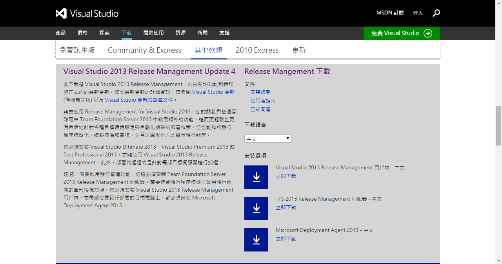
或是透過Visual Studio裡面來進行下載，但要注意的是，目前從Visual Studio進行下載的版本為英文版本，如果想要看中文的朋友，請透過上面的網址進行下載。
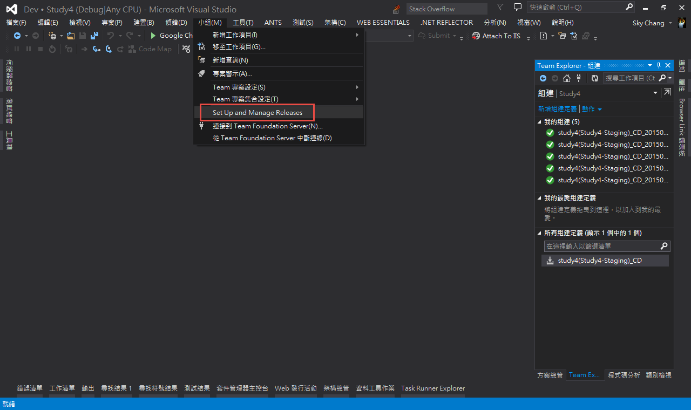
下載完畢後，只要同意就可以執行安裝。
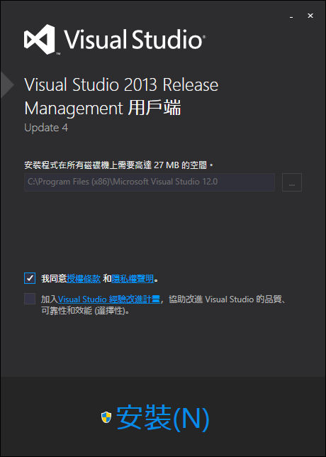
安裝完畢後的第一件事情就是要設定Visual Studio Online的URL，我們可以在下圖的位置填入到時候要使用的Visual Studio Online位置。
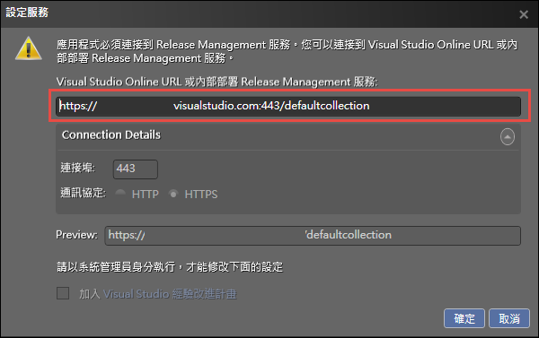
第一次的時候，會需要登入此Visual Studio Online。
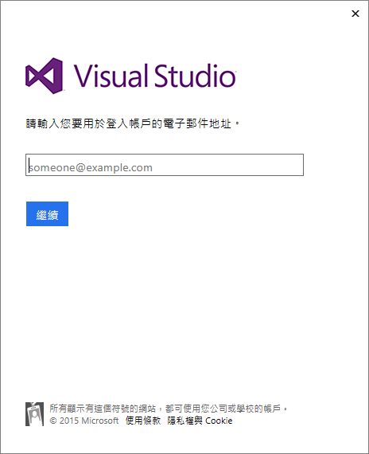
接下來，就會進入Release Management的畫面嚕!!，首先，我們要先將Stage Type設定一下，這邊我們加入Dev和QA。
所謂的Stage Type指的就是未來整個佈署過程可能會用到的環境，所以我們這邊設定的意思就是說，
未來我們佈署的過程中，會有Dev和QA兩個環境；而這邊是先進行名稱的設定，詳細的內容，下一個章節會繼續提到。( 如果沒進入到這一頁，也可以從”管理”” => “管理挑選清單”的地方進來設定 )
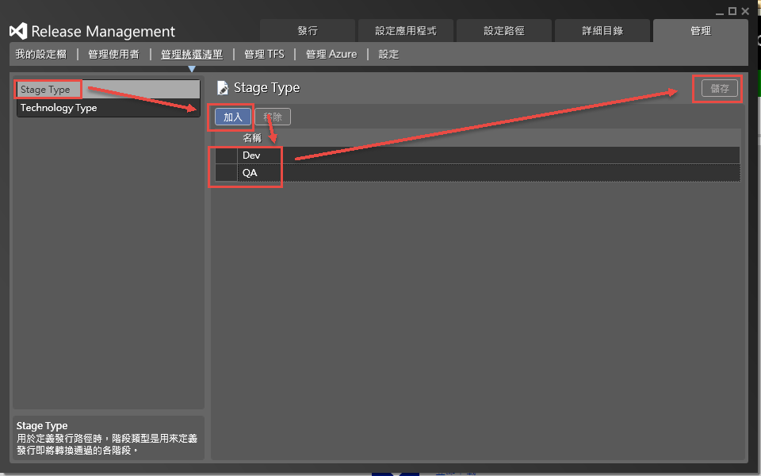
接下來，我們可以先跳到”設定應用程式” => “vNext 發行範本”來看看未來我們要設定那些東西…這邊先稍微看看就好，我們會針對幾個章節，一步一步的進行設定。
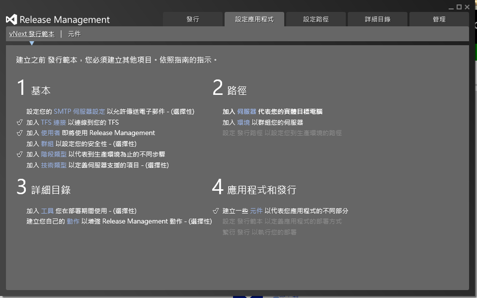
##開始設定前
到剛剛為止，我們已經將Release Management Client與VSO進行整合了，所以目前我們是使用VSO上面的Release Management。
有了Release Managment後，接下來，因為我們希望能透過Release Management佈署到Azure上的VM，所以我們要繼續把Release Management Client來與Azure進行整合。
另外，目前Updata 4後，有針對Visual Studio提供了超簡易化的設定工具，但還是建議，大家這邊進行學習，才會了解簡易化工具做了些甚麼。
##設定Azure訂閱
首先，我們希望未來能透過Release Management來佈署到Azure VM上，所以這邊我們先進入Azure的管理介面進行VM的建置。
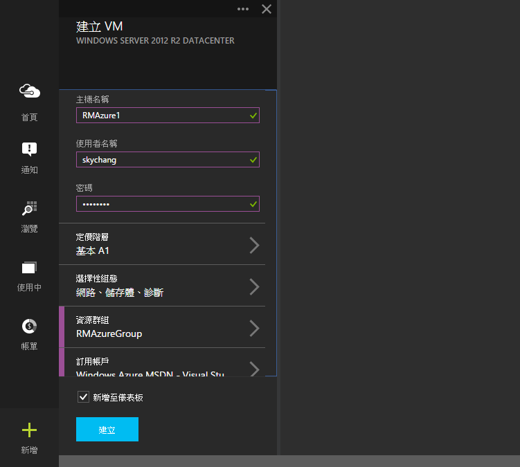
當建立完成之後，我們可以透過安裝Extensions來安裝Release Management的相關套件，這樣未來才能透過Release Management來進行佈署。
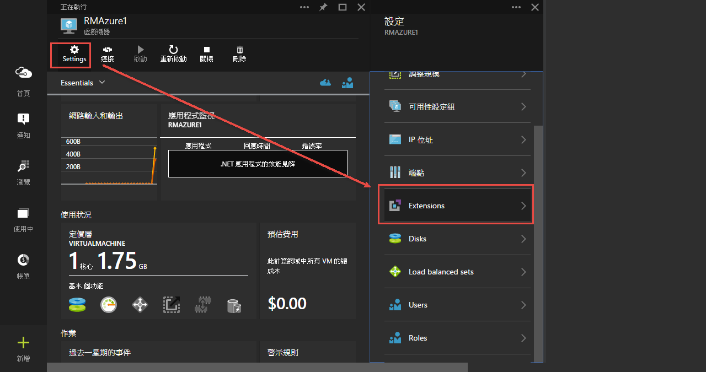
選擇Release Management相關套件，到這邊，VM就建立完成了。
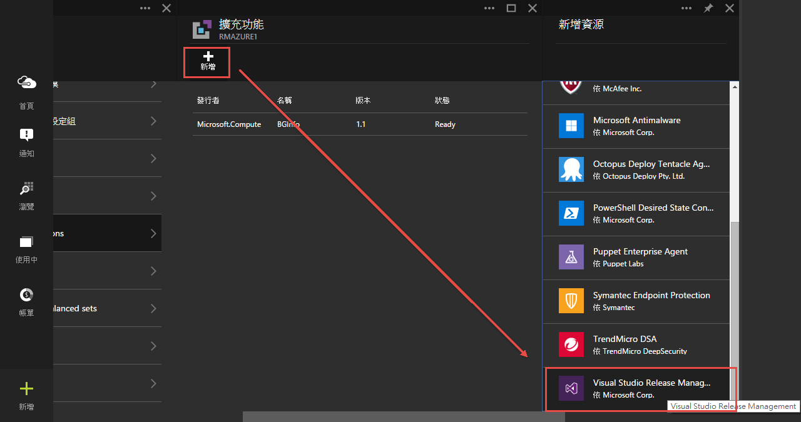
接下來要去Release Management Client設定Azure訂閱與Azure的Storage。
帳號資訊可以透過這邊 下載的佈署檔案看到相關的資訊。
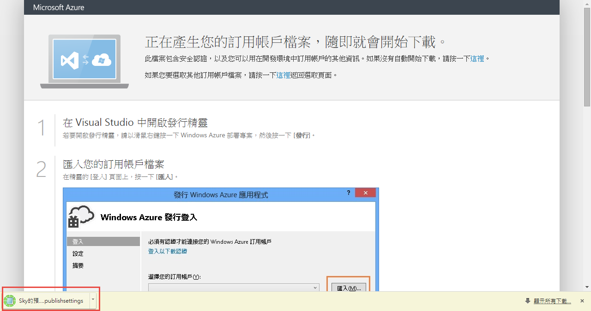
而Storage的名稱，可以直接登入到管理介面進行查看，這邊我們直接使用那台VM的Storage，您也可以選擇自己想要的Storage位置來存放編譯過後的檔案。
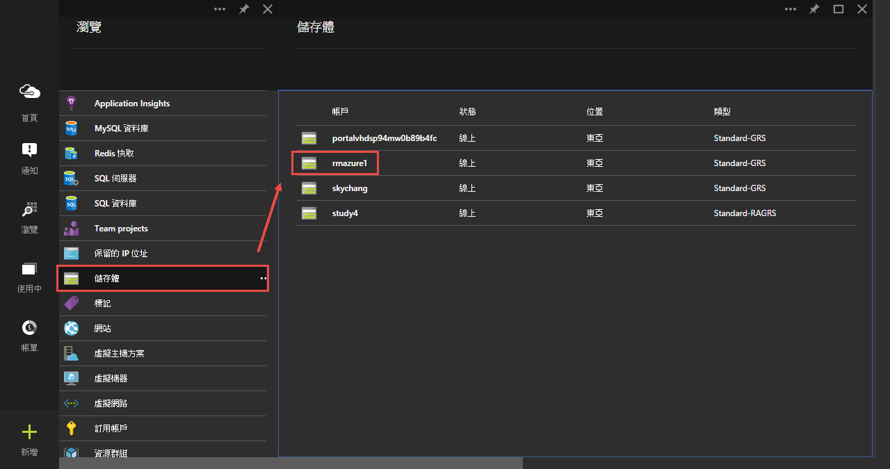
相關資訊都準備好之後，就可以回到Release Management來新增Azure訂閱。
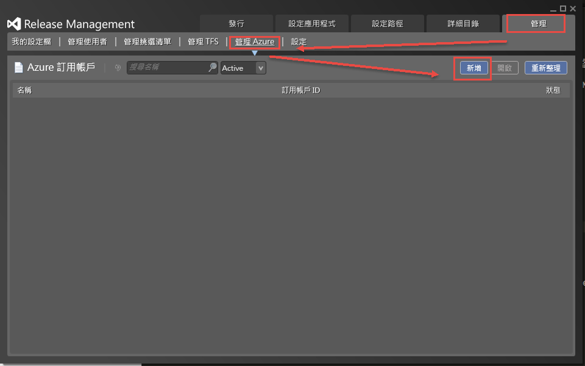
首先，打開剛剛下載下來的佈署檔，然後如下圖般，把相關的資訊貼上去；而最後一項，Storage Account Name則要填入Azure Storage的名稱。
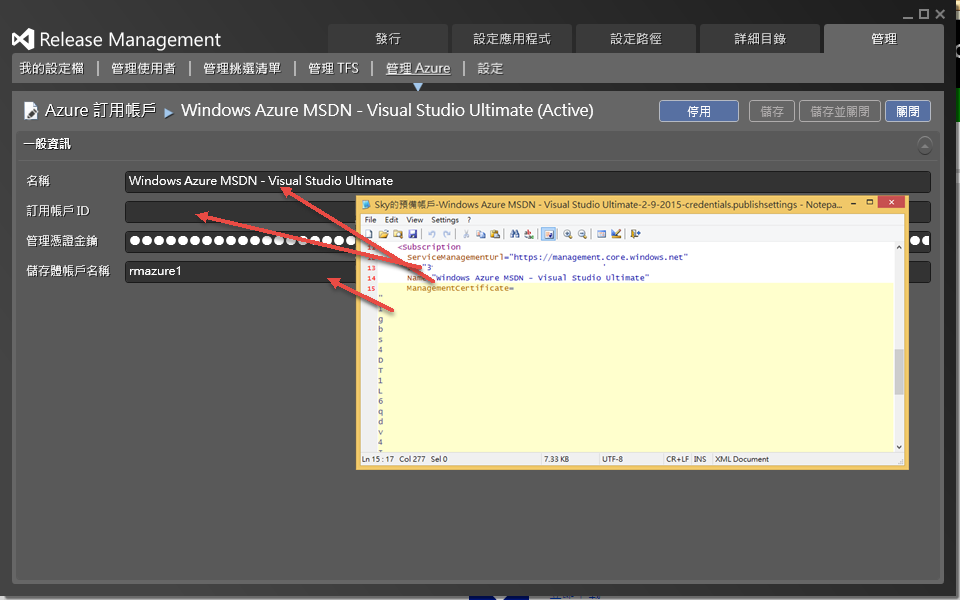
按下儲存後，就可以與Azure訂閱聯繫了!